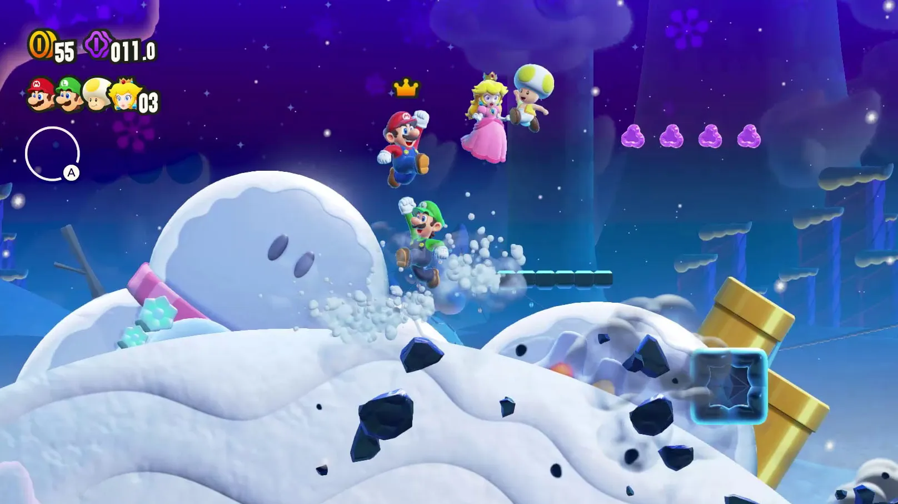

Everybody knows Mario, but Mario's 2D outings never really used that opportunity to expand and try new things, despite literally having a series called new in it's name, it chose to stagnate for several game straight. The same constantly reused aesthetics, no significant changes, no difference in the story-just Bowser kidnapping Peach, it wasw getting pretty tiring. But Wonder saw this and took it personally to create a game where you virtually never know what you're gonna get, and the result is everyy bit as obvious as the title: wonderful.
While the story is still a simple "Bowser bad guy" thing, everything else follows will always be unexpected, all thanks to this game's main mechanic: the Wonder Flower. Collect this and the level can completely change, maybe you're a floating balloon, dodging a stampede, becoming a poor, defensless, jumpless goomba, anything can change. With this the game always offers tons of fun set pieces and varied levels for the first time seen in a 2D Mario title. Also going along with this are the talking flowers, they constantly remark on the level and offer guidance without being too annoying, dare I say they even represent the child-like Wonder this game is meant to ensue. It's first time a character has full voice acting in a Mario title since Sunshine, so that should tell you how different the game is.
It's not all level gimmicks that have changed either: the gameplay has gotten a few overhauls too. Level progression has changed too, rather than just blasting your way to the end like every other 2D Mario, to progress you need to collect a certain amount of Wonder Seeds that can be find in each level by exploring, doing small challenges, and/or just beating the level altogether. You can also largely do most levels in any order or decide not to do them at all. There's also simple levels where the challenge isn't just holding right to win, like enemy gaunlets or puzzle rooms. You can choose to unlock an equippable augment like a glide or a swim button if you beat these levels. In spite of all of that, it's still pretty simple to reach the end.
Just be warned: this did effect the number of new power-ups too. There's only a bubble, elephant, and drill power. Respectively they trap enemies in firable bubbles that double as things to bounce on, give you a melee attack, and let you drill into a wall and have protection from above. They all can be a little more involved with the levels (like how you can bounce across the entirely of certain ones with a well timed bubble), but I would've like to see more.
It's hard not to mention the game's artstyle here. It takes inspiration from Shigehisa Nakaue's artstyle and uses it to make something incredibly charming and nicely detailed. Going along with this are sheer amount of animations this game has. There are tons of charming animations on everyone here for a lot of even small things, like looking downward and reacting in shock, balancing, being pushed, running, or entering/exiting pipes. I was surprised to see that this applies to the enemies too, Goombas have a dedicated animation for being stuck between platforms for instance. There's also several playable characters here, including Daisy for the first time, all having their own set of animations that express their personalitiies. (Look at all of them getting a powwr-up for instance)
Not just looks either the game also runs extremely well at a locked 60 fps at all times.
Is this an obvious and overused thing to say, even within this individual review? Yes. But the game is simply wonderful, a lot of joy, charm, and personality are this one. It has all of the simple fun a Mario game is known for at this point and expands on it with something that can only be described as child-like joy at every corner. I'd recommend this game to virtually anybody, it is pretty easy to pick up and play.